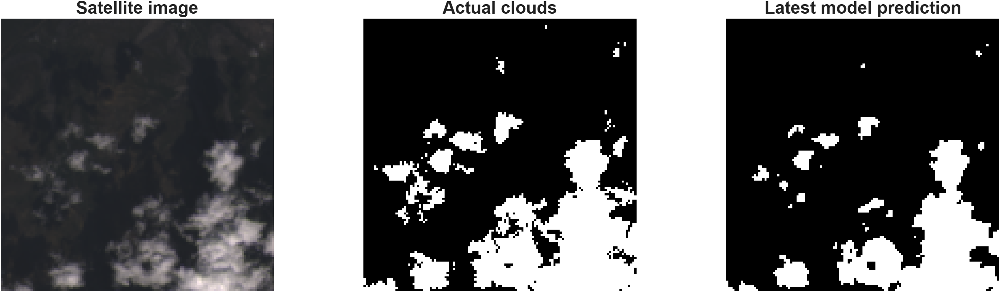

01
Location Selection
Select a Philippine Municipality
Select the region, province, and municipality or city that will be used as the reference location for the weather and satellite stages of the prototype.
Location Data
Philippine administrative lists are retrieved from PSGC Cloud. The confirmed municipality is geocoded to obtain an approximate reference coordinate for the weather and satellite stages.
02
Weather Observation
Current Location Weather
Current modeled precipitation and cloud-cover information for the selected municipality reference coordinates.
Current Condition
Waiting for weather data
Weather information will appear after the selected location is processed.
Weather Source
Weather values are retrieved from Open-Meteo for the selected municipality reference coordinates. These values represent modeled weather conditions and are not direct measurements from a local rain gauge.
03
Satellite Observation
JMA Himawari Southeast Asia 2
Regional Himawari observation using B07 — Short Wave Infrared . This satellite view is presented as live observational context and is not processed by the existing Landsat U-Net model.
JMA Himawari B07 imagery will appear here.
Important Satellite Interpretation
The B07 image is used as current regional satellite context. It is not directly segmented by the MATLAB U-Net because the existing network was trained using the historical 38-Cloud Landsat dataset with a different sensor, spectral configuration, spatial resolution, and data distribution.
Prototype Limitation
Applying the Landsat-trained model directly to live Himawari B07 imagery would not provide a scientifically valid segmentation result without suitable Himawari training masks, preprocessing, and model retraining or adaptation.
04
MATLAB Demonstration
MATLAB U-Net Cloud Segmentation
Historical cloud-segmentation demonstration using the 38-Cloud satellite-image dataset and the trained MATLAB U-Net model.
HISTORICAL DATASET DEMONSTRATION
38-Cloud Cloud Segmentation
The U-Net was trained in MATLAB using prepared Landsat image patches containing red, green, blue, and near-infrared bands.
Satellite Image
Historical 38-Cloud test sample
→
MATLAB U-Net
Trained cloud segmentation network
→
Predicted Cloud Mask
Pixel-level cloud classification

Displayed MATLAB Output
The comparison image above is a saved output from the MATLAB cloud-segmentation workflow. It represents historical 38-Cloud test data and should not be interpreted as segmentation of the live Himawari B07 image shown in Stage 3.
MODEL EVALUATION
Baseline and Experiment 2 Results
The two evaluations are presented separately because they were performed on different test-set sizes. Experiment 2 is the newer evaluation, but it does not outperform the baseline on every segmentation metric.
Baseline U-Net
160 test images
Experiment 2 U-Net
800 test images
Actual mean cloud coverage: 31.96%
Predicted mean cloud coverage: 29.43%
Result Interpretation
Experiment 2 achieved higher overall pixel accuracy and precision, while the baseline evaluation produced higher Cloud IoU, Dice, and recall. Therefore, Experiment 2 should not be described as universally superior based on a single metric.
Live Himawari Limitation
The live Himawari B07 image is not segmented by the existing U-Net. A future extension requires a suitable Himawari dataset, reference masks, preprocessing, and model training or domain adaptation.
05
Link Assessment
Current Rain Attenuation Assessment
Estimate the specific attenuation associated with the current rain rate using the ITU-R P.838-3 rain-specific attenuation model. The result provides a propagation impact estimate for C-band or Ku-band operation.
PROPAGATION PARAMETERS
Link Inputs
Degrees
Automatically populated from Stage 2 when
Stage 5 is opened. You may edit the value
for scenario testing.
Awaiting Calculation
Specific Attenuation
—
γR in dB/km
Coefficient k
—
Frequency and polarization dependent
Exponent α
—
Frequency and polarization dependent
Link Impact
—
Prototype interpretation
Rain Attenuation Result
Select the link parameters and calculate the current rain-specific attenuation.
ITU-R P.838-3 Calculation
The prototype calculates rain-specific attenuation using γR = kRα, where R is rain rate in mm/h and γR is expressed in dB/km. The coefficients k and α depend on frequency, polarization, and propagation geometry.
Important Interpretation
This stage reports current rain-specific attenuation. It does not claim that the value is a complete satellite-link fade or a long-term availability percentage.
A complete Earth-space link assessment following ITU-R P.618 requires additional propagation geometry, rainfall statistics, rain height, effective path calculations, and other link parameters.
Prototype Impact Categories
The displayed Minimal, Low, Moderate, High, and Severe labels are prototype interpretation categories. They are not ITU-R-defined reliability thresholds.